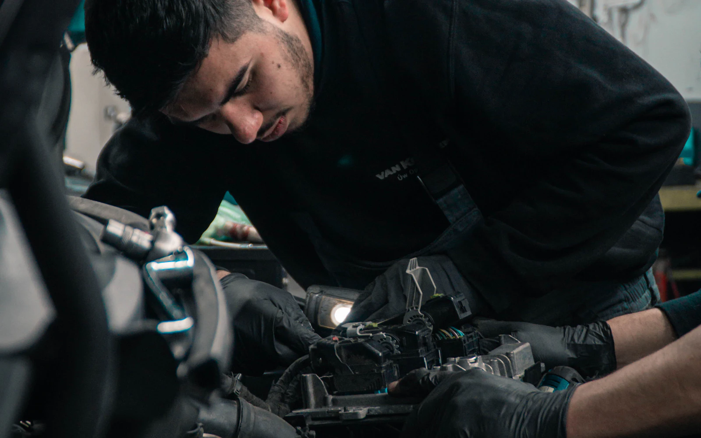

We belden tientallen Belgische garages. 8 op de 10 namen niet op.
In het kort
Deze zomer belden we tientallen onafhankelijke garages, overal in België, tijdens de openingsuren, zoals eender welke autobestuurder. Niet om iets te verkopen: om te weten wie opneemt. Dit zijn de cijfers — en wat ze betekenen voor uw werkplaats.

Wat we precies deden
De methode past in drie regels. We namen onafhankelijke garages — in Vlaanderen, rond Brussel en in Wallonië — en we belden ze in volle werkdag, tussen 9 en 17 uur. Eén oproep per garage, van een gewone gsm, zonder verborgen nummer.
Nam iemand op, dan verontschuldigden we ons voor het verkeerde nummer, en daar bleef het bij. Nam niemand op, dan noteerden we: aantal beltonen, voicemail of niet, een bericht kunnen inspreken of niet, teruggebeld binnen de 24 uur of niet.
Eerlijkheid over de methode: enkele tientallen oproepen zijn geen statistische studie, het is een steekproef op het terrein. We publiceren geen cijfers na de komma. Maar wanneer een resultaat zó uitgesproken is, verandert de foutenmarge niets aan de conclusie — en u kunt de test zelf overdoen, in één uur.
Het resultaat: 80% zonder antwoord
Acht oproepen op tien hebben nooit een mens bereikt. In detail: de meeste bleven rinkelen tot het einde; een deel kwam uit op een voicemail — vaak die van de operator, nooit ingesteld, soms vol; enkele lijnen waren bezet.
Toch is dat niet het cijfer dat ons het meest is bijgebleven. Dat is het terugbellen dat uitblijft. Logisch: zonder bericht valt er niet terug te bellen. Maar verplaats u één seconde in de autobestuurder. Voor hem heeft die garage gewoon niet geantwoord — en hij zal nooit weten dat u onder een brug lag, uw vak aan het uitoefenen.
Waarom niemand opneemt — en waarom niemand iets te verwijten valt
Die 80% zegt niet dat garagisten slecht werken. Ze zegt net het omgekeerde: ze werken te hard om te kunnen opnemen. Overloop een gewone dag in de werkplaats. Om 8 uur zetten klanten hun wagen af en willen ze elk twee minuten uitleg. Om 9 uur ligt u onder de eerste brug; de telefoon ligt in het bureau, vijftien meter en een deur verderop. Uw handen zitten onder het vet — het scherm zou het niet overleven. Aan de balie wacht iemand op zijn factuur terwijl een leverancier aan de andere lijn hangt.
In een garage heeft iedereen een vak: mecanicien, carrossier, receptionist als die er is, een zaakvoerder die vaak alle drie tegelijk is. De telefoon beantwoorden is niemands vak. En iemand aanwerven alleen daarvoor kost een volledig loon, lasten inbegrepen — buiten bereik van de meeste onafhankelijke garages. De telefoon rinkelt dus in het ijle, niet uit nalatigheid, maar omdat er gekozen moet worden: de auto op de brug wint altijd.
Wat een gemiste oproep echt kost
Wie belt een garage om 10 uur op een dinsdag? Geen robots: klanten. Ofwel iemand die een afspraak wil inplannen — onderhoud, banden, een controle vóór de keuring —, ofwel iemand met een probleem: een brandend lampje, een auto die niet meer start, panne onderweg.
Reken het na met uw eigen prijzen. Olie verversen met filter: rond de € 150. Een groot onderhoud: € 300 tot € 500. Remblokken en remschijven: dezelfde grootteorde. Een distributieriem, een koppeling, een versnellingsbak: boven de duizend euro, soms drieduizend. En achter die eerste factuur komt de rest — een tevreden klant komt elk jaar terug, en brengt de auto van zijn partner mee.
Een gemiste oproep is dus geen ongemak: het is een interventie die naar elders vertrekt. Eén per dag volstaat om de gederfde omzet van de maand ver boven de kost van eender welke telefoonpermanentie te tillen.
„Ze bellen wel terug” — nee, ze bellen niet terug
Het is de tegenwerping die we telkens horen, en ze was wellicht waar toen uw garage de enige was in de wijde omtrek. Uw klant van 2026 heeft Google open staan: de kaart toont zes werkplaatsen op minder dan een kwartier, elk met hun nummer. Komt hij op uw voicemail uit, dan spreekt hij niets in — hij tikt op het volgende nummer.
Bij pech onderweg is het nog harder. De bestuurder langs de kant van de weg belt de lijst af, in volgorde, en wie het eerst opneemt krijgt de takelopdracht — daarna de herstelling, daarna de klant.
Drie manieren om die oproepen te redden
Runt u een werkplaats, dan hebt u drie realistische opties.
- Iemand aanwerven voor het onthaal. De beste klantervaring, en de duurste: een volledig loon voor een functie die alleen tijdens de openingsuren dient. Rendabel voor grote structuren, zelden voor een onafhankelijke garage.
- Een klassiek telefonisch secretariaat. Menselijke operatoren nemen op in uw plaats en noteren berichten, gefactureerd per oproep. Al beter dan de voicemail. De grens: ze kennen uw bruggen niet, uw duurtijden niet, uw agenda niet — zij noteren, u belt terug, het werk gebeurt twee keer.
- Een AI-receptioniste. Ze neemt op in enkele seconden, 24/7, kent uw prestaties en uw planning, plant de werkplaatsafspraken in tijdens het gesprek en schakelt dringende oproepen meteen door naar uw gsm. Vaste maandkost, geen loon.
De derde optie is wat wij bouwen: ze heet Janet, en hier leest u in detail wat ze voor een garage doet. Laten we eerlijk zijn — Celya verkoopt die oplossing, dit artikel is dus niet neutraal. De test van in het begin is dat wél, helemaal: doe hem over. Bel tien garages in uw buurt, op een dinsdag om 10 uur, en tel wie opneemt.
Wat u moet onthouden
- In volle werkdag nam 80% van de garages die we belden niet op — en belde ook niet terug.
- Dat is geen gebrek aan ernst: in een werkplaats is de telefoon beantwoorden niemands vak.
- Elke inkomende oproep zet € 300 tot € 3.000 aan werk op het spel, plus de waarde van de klant die terugkomt.
- Een klant zonder antwoord belt niet terug: hij belt de volgende garage op de kaart.
- De echte vraag is niet „wie neemt op?”, maar „wat gebeurt er wanneer ik niet kán opnemen?”. Is het antwoord „niets”, dan betaalt u al — zonder het te zien.
← Alle artikels Het telefoonsecretariaat voor garages → Telefonische reservaties in het restaurant →
Hoor zelf wat uw klanten te horen zouden krijgen
Janet neemt op in enkele seconden, in het Nederlands en in het Frans — ook voor de Franstalige klant die uw werkplaats belt. Het is een AI, en dat zegt ze zelf. Bel haar, en oordeel zelf.
Ze antwoordt u en plant een demo in.